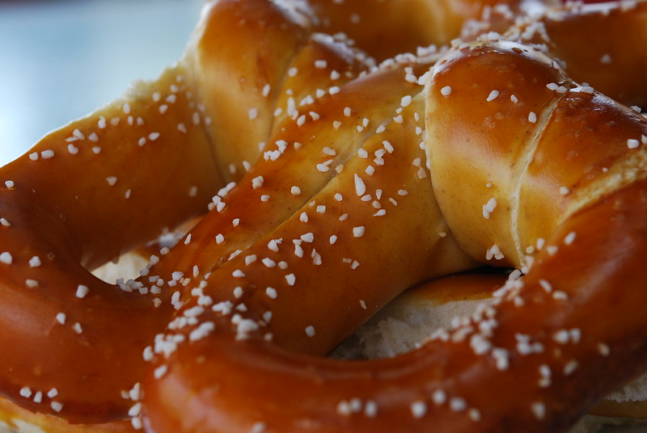
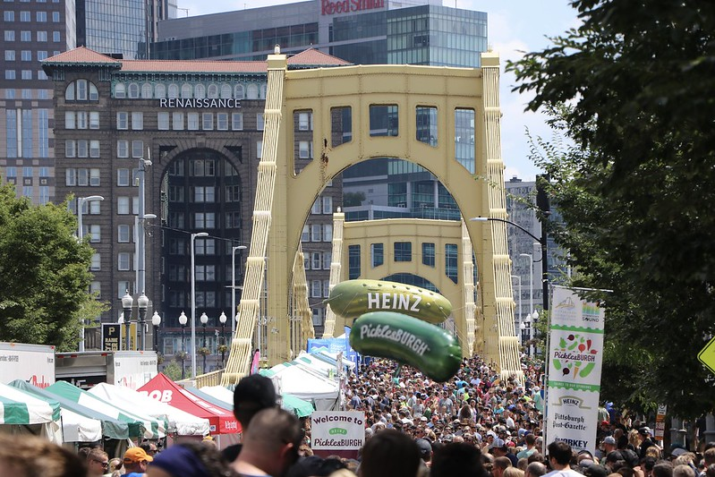

Dining
Pennsylvania has iconic foods and is the home to several food-related events. Picklesburg is held in Pittsburgh every year.
Visitors from accross the state enjoy pickles for a weekend in the summer.
Some of the most iconic PA foods are the cheesesteak, pretzels, and perogies.
 